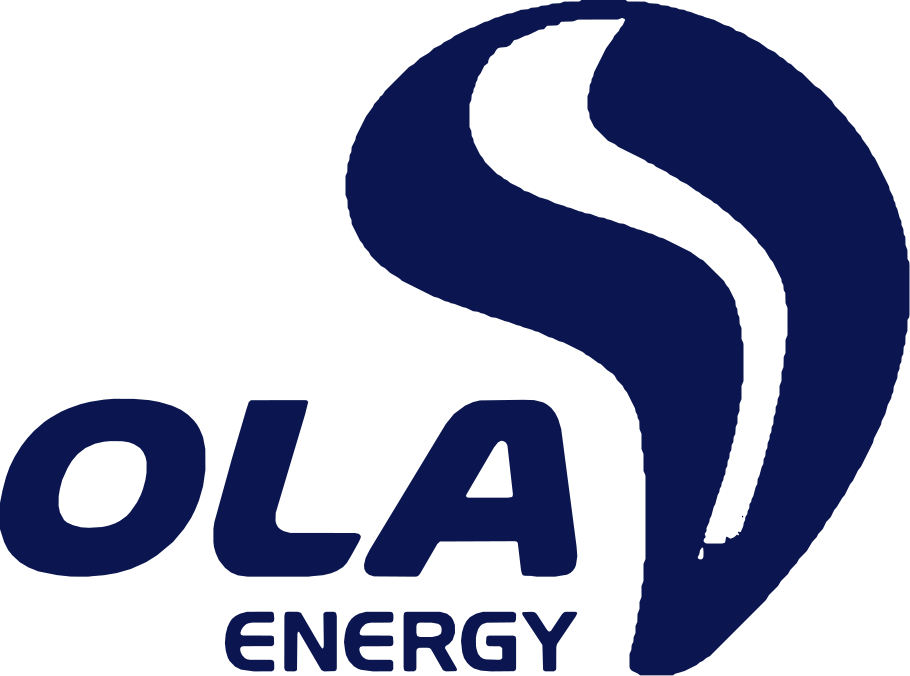
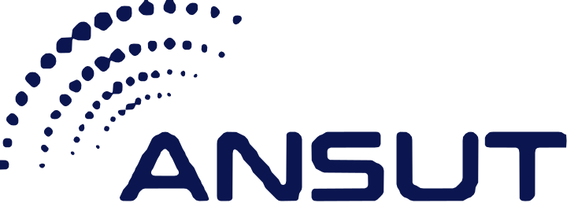

L'intelligence précède l'exécution.
MAIORIS est un cabinet indépendant d'intelligence stratégique et créative, installé à Abidjan. Nous donnons aux organisations ambitieuses la direction, l'architecture et les systèmes qui rendent leur performance durable. Avant le premier brief.
Parcours & empreinte
Une nouvelle signature. Neuf années de terrain. Une ambition régionale.
9ans
d'expérience en leadership créatif
15+marques
accompagnées au fil du parcours
3marchés
Côte d'Ivoire · Togo · Mali
6leviers
de Creative Leadership intégrés à notre approche
MAIORIS GROUP · CREATIVE LEADERSHIP FOR BUSINESS PERFORMANCE.
Ils nous ont fait confiance.

 Côte d'Ivoire & Togo
Côte d'Ivoire & Togo




 Côte d'Ivoire
Côte d'Ivoire
Positionnement
Ni une agence de plus. Ni un cabinet de conseil de plus. Le travail qui vient avant les deux.
- Les agences
- Produisent le travail. Questionnent rarement le brief.
- Les cabinets de conseil
- Écrivent la stratégie. La rendent rarement créative.
- MAIORIS
- Oriente les décisions créatives, architecture le système, prouve la performance.
Les enjeux que nous traitons
La plupart des organisations ne manquent pas de créativité. Elles manquent de l'architecture qui la transforme en performance.
- Des opérations créatives fragmentéesCreative Operating System →
- Une différenciation de marque trop faibleBrand Intelligence →
- Un désalignement stratégiqueMCPS Diagnostic →
- Des systèmes créatifs inefficacesCreative Operating System →
- Des investissements marketing qui ne rendent pasMCPS Diagnostic →
- Une adoption de l'IA sans architecture stratégiqueTransformation 90 →
- Une croissance sans préparation organisationnelleGrowth Architecture →
Autodiagnostic
Lequel vous freine ?
Sept affirmations, deux minutes, une réponse claire.
Nos expertises
Quatre piliers, un seul édifice.
Notre système d'intelligence
MAIORIS CPS™, une méthode qui rend la performance reproductible.
- Observer
- Diagnostiquer
- Prioriser
- Concevoir
- Gouverner
- Exécuter
- Mesurer et améliorer
Actualité

Leadership créatif
Construire un territoire de marque et diriger l'équipe créative : la première référence de l'approche devenue MAIORIS.
Analyses
Penser à voix haute, depuis l'Afrique de l'Ouest.
Des prises de position sur la stratégie, les systèmes créatifs, l'IA et les marchés que nous connaissons, écrites par des praticiens.
- Intelligence stratégiqueAvant la campagne, trouvez la contrainte.19 novembre 2026 · 4 min de lecture
- IA et systèmes créatifsL'IA ne remplace pas la direction créative. Elle révèle son absence.19 novembre 2026 · 4 min de lecture
- Opérations créativesLe coût caché d'une production créative sans système.19 novembre 2026 · 5 min de lecture
Conversation stratégique
Parlez-nous de l'enjeu, pas du brief.